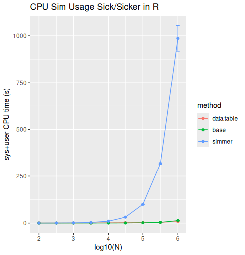

The Sick/Simmer model constructed previously did not use the full power of what discrete event simulation has to offer. This will build on the previous work and include a demonstration of the effects of a resource constraint.
“Art in nature is rhythmic and has a horror of constraints.” –Robert Delaunay
Technical Details
One thing to be aware of is that if one were to execute each patient trajectory as a simulation outside of a discrete event simulation (DES) framework it would likely have much higher performance. A DES framework has to execute all trajectories at the same time, evaluate them all to check for any resource contention and this penalty is fixed whether or not the model has resource constraints. A large number of cost effectiveness studies utilizing DES do not have constrained resources. To put the problem in perspective, independent simulations are \(\mathcal{O}(n)\) in complexity of execution. Meaning the total time/memory utilization is proportional to the number of individuals simulated. DES requires the fixed cost of resource contention checking, and has to manage this utilizing a heap and this makes the complexity \(\mathcal{O}(n \log n)\). This is a theoretical limitation based on complexity.
In earlier unpublished work we1 quantified the differences using a Sick Sicker model.

This shows that in a practical case, when \(N >= 100,000\) the simmer based DES solution because impractical. For our in house models using simmer we batched them into units of 100,000 patients and ran using the method outlined in our ACCRE tutorial.
If one needs a full DES due to resource constraints, this problem is not easily avoidable–and the \(N\) of single DES simulation becomes the number contending for a finite resource.
What if there were resource constraints (e.g. facilities) to get patients inducted onto medication and the process took time? We are doing to split the state of “Sick 1” or S1 into S1U “Sick 1 Untreated” and “Sick 1 Treated” and introduce treatment induction resource constraint, sometimes called a “tunnel state”. In this case there is a queue to enter the tunnel.
The focus of the model now shifts from comparing treatment to no treatment, to doing a profile of the impact of investment on reduction of waiting.
A Naïve Solution
We copy inputs.R to inputs2.R and model-7.R to model-8.RPlease note, in practice renaming files like this should not be done and one would use git to track versions of a file like inputs, but for pedantic purposes we have all versions available in a flat archive and make the following edits to inputs2.R
strategy = 'notreat',# Default strategy is no treatment
# Resource Constraint
n.capacity = 2 # Number of individuals who can receive treatment
Further, we bumped the N value to 20.
We intend to severely limit the capacity of treatment to Sick individuals.
Further remove "sick" from the counter list in model-7.R and add
add_resource("treat", inputs$n.capacity) |>
to the des_run function.
This means that the resource treat has a capacity to treat 2 patients at a time, and has infinite waiting room capacity. This will cause the event_sick function call to seize("treat) to pause if 2 patients are already receiving treatment.
The sick1 event handling function is also overridden locally to show how long a patient spent waiting.
This debug output demonstrates that 20 patients with a single treament center that can handle 2 individuals– the resources constraint is having an effect on patient outcomes–as they are forced to wait years for treatment (years being the unit of simulation time in this example).
Welch Two Sample t-test
data: dr.constrained and dr.original
t = -50.655, df = 147.2, p-value < 2.2e-16
alternative hypothesis: true difference in means is not equal to 0
95 percent confidence interval:
-26.62991 -24.63009
sample estimates:
mean of x mean of y
6.05 31.68
First of all note we had to run replicates of the simulation to determine effect size. Secondly, the t-test comparison between the runs shows a statistically discernable difference.
While we have implemented a resource constraint, the face validity of the model is broken as a patient awaiting treatment can no longer progress back to Healthy, Sick2 or Death until treatment is received This has prevented a lot of simulated deaths, but only by destroying the simulated rate of death.
A strategy to let the original simulation proceed is required.
Clone and Synchronize
Fortunately, simmer has tools to help deal with this. In this case it’s not as straightforward as we’ve already built a tool chain that doesn’t account for resource constraints. We need to use the clone and synchronize operators and do so without disturbing the original event loop.
clone will split a trajectory, and attributes and resources are inherited. synchronize throws away all but one trajectory that reaches it.
The strategy is to clone the trajectory and let one escape back into our simulation engine, while the other seizes the treatment resource. This leads to the conundrum that the main loop needs to know about treatment and should be able to release it.
Asynchronous coding is very difficult, but we’re going to have to cross that bridge. To do this, one of the split threads will seize and release the treatment resource with limited access but it will rely on passing signals back and forth with it’s sibling trajectory. send and trap allow this to happen. The inverse trap is required to get a signal back to tell it to release the treatment and cleanup.
sick1 <- function(traj, inputs)
{
traj |>
set_attribute("State", 1) |> # 1 => Sick 1 (S1)
release('healthy') |> # Track state change for tally later
seize('sick1') |>
set_attribute("sS1", function() now(env)) |>
branch(
function() (inputs$strategy == "treat")+1,
continue = rep(TRUE, 2),
trajectory(), # No Treatment Strategy
trajectory() |>
clone(
n = 2,
# This clone "escapes" and continues health state progression
trajectory() |>
trap('sieze_treat',
trajectory() |>
set_attribute("Treat", 1) |>
untrap('sieze_treat')
),
# This clone waits patiently for treatment
trajectory() |>
seize('treat') |>
trap('release_treat',
trajectory() |>
release('treat') |>
untrap('release_treat') |>
branch(function() 1, continue=FALSE, trajectory())
) |>
send('sieze_treat') |>
log_(function() {paste("Waited:", now(env) - get_attribute(env,"sS1"))}) |>
timeout(inputs$horizon) # Make sure last arrival
) |>
synchronize(wait=FALSE)
)
}
Now the rest of the events need to be modified to send the right signals.
# A helper function to deal with releasing treatment via
# a signal if needed to release
release_treat <- function(.traj)
{
.traj |>
branch(
function() get_attribute(env, "Treat") +1,
continue = rep(TRUE, 2),
trajectory(), # No Treatment
trajectory() |>
send('release_treat') |>
set_attribute("Treat", 0)
)
}
healthy <- function(traj, inputs)
{
traj |>
set_attribute("State", 0) |> # 0 => Healthy (H)
seize('healthy') |>
release('sick1') |>
release_treat()
}
death <- function(traj, inputs)
{
traj |>
release_treat() |>
branch(
function() 1,
continue=c(FALSE), # False is patient death, had to use a branch to force termination
trajectory("Death") |>
mark("death") |> # Must be in 'counters'
terminate_simulation(inputs)
)
}
Welch Two Sample t-test
data: dr.constrained and dr.original
t = 8.8934, df = 196.55, p-value = 3.858e-16
alternative hypothesis: true difference in means is not equal to 0
95 percent confidence interval:
4.61503 7.24497
sample estimates:
mean of x mean of y
37.61 31.68
The death rate is still different, but in this case the deaths go up which is in line with what we expected by restricting treatment. A good sign that our modifications are working as intended.
Generating Results
Imagine our goal would be to profile the effect of resource limits on dQALY. A single simulation isn’t enough, we have to run multiple simulation and average the results for each target resource.
TBD: Profile plot of resource limits from 2-20 for 100 patients.
Footnotes
Shawn Garbett, Fernando Alarid-Escudero, Cole Beck↩︎